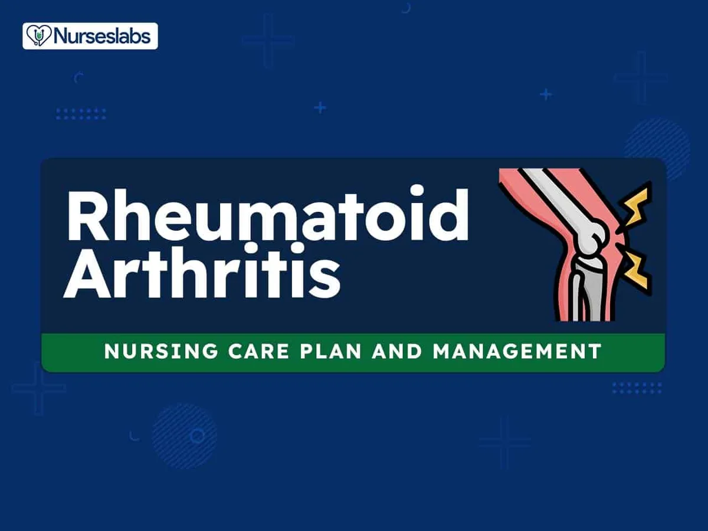

Expanded Nursing Uganda Explanation
Rheumatoid Arthritis should be understood beyond a short definition. Link the concept to patient history, focused assessment, common risks, nursing priorities, documentation and evaluation of outcomes.
01 Overview
Arthritis is not a single disease but rather an umbrella term that encompasses over 100 different conditions that affect joints, the tissues surrounding joints, and other connective tissues. The common thread among all forms of arthritis is joint inflammation, which typically manifests as pain, swelling, stiffness, and reduced range of motion in the affected joints.
Arthritis is the swelling and tenderness of one or more joints.
While some forms of arthritis, like Osteoarthritis , are primarily degenerative conditions caused by the breakdown of joint cartilage due to wear and tear, others, like Rheumatoid Arthritis , are systemic autoimmune diseases where the body's immune system mistakenly attacks its own healthy tissues. Understanding the distinction between these broad categories is crucial for accurate diagnosis and effective management.
- Define Rheumatoid Arthritis (RA).
- Explain the Etiology and Pathophysiology of RA.
- Identify the Risk Factors and Genetic Predisposition for RA.
- Describe the Clinical Manifestations and Systemic Effects of RA.
- Outline the Diagnostic Criteria and Assessment Approaches for RA.
- Discuss Pharmacological Management Strategies for RA.
- Explain Non-Pharmacological and Rehabilitation Management for RA.
- Describe Surgical Interventions for Advanced RA.
- Identify Nursing Diagnoses for RA.
- Outline Nursing Interventions for RA.
Rheumatoid Arthritis (RA) is a chronic, systemic, autoimmune inflammatory disease that primarily affects the joints, but can also impact various other organ systems in the body.
- Chronic: This means that RA is a long-lasting condition, often lifelong, with periods of exacerbation (flares) and remission. It typically requires ongoing management.
- Systemic: Unlike osteoarthritis, which is primarily localized to joints, RA is a systemic disease, meaning it can affect the entire body. While its most prominent effects are on the joints, RA can also cause inflammation in organs such as the lungs, heart, eyes, skin, and blood vessels.
- Autoimmune: This is a crucial characteristic. In autoimmune diseases, the body's immune system, which is designed to protect against foreign invaders like bacteria and viruses, mistakenly attacks its own healthy tissues. In RA, the immune system targets the synovium, which is the lining of the membranes that surround the joints.
- Inflammatory Disease: Inflammation is the body's protective response to injury or infection. In RA, this inflammatory response becomes chronic and destructive. The persistent inflammation in the synovium leads to joint pain, swelling, stiffness, and ultimately can cause erosion of bone and cartilage, leading to joint destruction and deformity if not effectively treated.
Etiology (causes) and pathophysiology (mechanisms of disease development) of Rheumatoid Arthritis (RA).
The exact cause of RA is unknown, but it is believed to be a multifactorial disease resulting from a complex interaction between genetic predisposition and environmental triggers.
- HLA Genes: The strongest genetic link is with specific variants of the Human Leukocyte Antigen (HLA) class II genes, particularly HLA-DRB1 . Individuals carrying certain HLA-DRB1 alleles have a significantly increased risk of developing RA. These genes play a critical role in presenting antigens to T cells, thus influencing immune responses.
- Non-HLA Genes: Numerous other non-HLA genes have also been identified through genome-wide association studies (GWAS) that contribute to RA susceptibility, each with a small individual effect but collectively increasing risk. These often relate to immune system regulation (e.g., PTPN22, STAT4, CTLA4).
- Family History: A family history of RA increases an individual's risk, further supporting a genetic component.
- Smoking: Tobacco smoking is the most consistently identified environmental risk factor for RA. It significantly increases the risk, especially in genetically susceptible individuals (those with HLA-DRB1 alleles), and is associated with more severe disease and the presence of autoantibodies (like anti-citrullinated protein antibodies - ACPAs).
- Infections: Certain bacterial or viral infections have been hypothesized to act as triggers, particularly those that involve molecular mimicry (where microbial antigens resemble self-antigens, leading the immune system to mistakenly attack self-tissues). Examples include Porphyromonas gingivalis (implicated in periodontal disease) and certain viruses (e.g., Epstein-Barr virus), though direct causative links are still under investigation.
- Other Factors: Exposure to silica, occupational exposures, and certain dietary factors are also being investigated, but their roles are less clear than smoking.
- Gender: RA is 2-3 times more common in women than men, suggesting a hormonal influence. Estrogen may play a role, as onset often occurs during childbearing years, and symptoms can sometimes improve during pregnancy and worsen postpartum. However, the exact mechanism is not fully understood.
The pathophysiology of RA involves a complex interplay of immune cells, inflammatory mediators, and tissue destruction.
- Initial Trigger and Autoantibody Formation: In genetically susceptible individuals, an environmental trigger (e.g., smoking, infection) is believed to initiate an immune response. This trigger might lead to post-translational modification of proteins (e.g., citrullination), rendering them "foreign" to the immune system.
- This leads to the production of autoantibodies , most notably rheumatoid factor (RF) and anti-citrullinated protein antibodies (ACPAs) (also known as anti-CCP antibodies). These autoantibodies can be detected in the blood even years before clinical symptoms appear.
- Synovial Inflammation (Synovitis): The immune response primarily targets the synovium , the specialized connective tissue lining the inner surface of joint capsules.
- Immune cells, including T-lymphocytes, B-lymphocytes, macrophages, and dendritic cells , infiltrate the synovium.
- These cells become activated and begin to proliferate, leading to an increase in the number of synovial cells and the formation of an inflammatory exudate.
- The synovial membrane becomes swollen, inflamed, and hyperplastic (thickened).
- Production of Pro-inflammatory Mediators: Activated immune cells within the synovium release a cascade of pro-inflammatory cytokines, chemokines, and other mediators. Key players include: Tumor Necrosis Factor-alpha (TNF-α)
- Interleukin-1 (IL-1)
- Interleukin-6 (IL-6)
- Interleukin-17 (IL-17)
- These cytokines drive and perpetuate the inflammatory process, attracting more immune cells and activating resident synovial cells.
- Pannus Formation: The chronically inflamed and proliferating synovial tissue transforms into a highly destructive tissue called pannus .
- Pannus is characterized by invasive fibroblast-like synoviocytes, macrophages, and new blood vessel formation (angiogenesis).
- The pannus grows into the joint space, spreading over and beneath the articular cartilage.
- Cartilage and Bone Destruction: The pannus directly invades and erodes the articular cartilage through the release of proteolytic enzymes (e.g., matrix metalloproteinases - MMPs, cathepsins).
- It also invades the underlying subchondral bone , leading to bone erosions.
- Osteoclasts (bone-resorbing cells) are activated at the bone-pannus interface, contributing to bone destruction.
- This ongoing destruction of cartilage and bone leads to narrowing of the joint space, loss of joint integrity, joint laxity, and eventually, joint deformities and functional loss.
- Systemic Manifestations: The pro-inflammatory cytokines (especially TNF-α and IL-6) spill into the systemic circulation, leading to systemic inflammation and manifestations beyond the joints. These include fatigue, fever, weight loss, anemia of chronic disease, and inflammation in other organs (e.g., rheumatoid nodules, vasculitis, pleuritis, pericarditis, scleritis).
While the exact cause of Rheumatoid Arthritis (RA) is unknown, a combination of genetic and environmental factors significantly increases an individual's risk of developing the disease. Identifying these risk factors helps in understanding disease susceptibility and can sometimes inform preventative strategies (where modifiable factors are involved).
This is one of the strongest and most well-understood risk factors.
- HLA-DRB1 Genes: "Shared Epitope": The most significant genetic risk factor is the presence of specific alleles within the Human Leukocyte Antigen (HLA) complex, particularly HLA-DRB1 . Certain versions of these genes are referred to as the "shared epitope" and are strongly associated with increased susceptibility to RA, especially seropositive RA (RA with positive Rheumatoid Factor and/or anti-CCP antibodies) and more severe disease. These genes encode proteins that play a crucial role in presenting antigens to T-cells, thereby shaping the immune response.
- Other Non-HLA Genes: Numerous other genes have been identified through large-scale genetic studies that contribute to RA risk, albeit with smaller individual effects. These genes often regulate various aspects of the immune system and inflammation, including: PTPN22 (Protein Tyrosine Phosphatase Non-receptor Type 22): Involved in T-cell activation.
- STAT4 (Signal Transducer and Activator of Transcription 4): Involved in cytokine signaling.
- CTLA4 (Cytotoxic T-Lymphocyte Antigen 4): A co-inhibitory receptor on T-cells.
- TRAF1-C5 region: Associated with inflammatory pathways.
- Family History: Having a first-degree relative (parent, sibling, child) with RA increases an individual's risk by several times compared to the general population, underscoring the role of inherited genetic factors.
These factors interact with genetic predisposition to trigger or influence the development of RA.
- Smoking: Strongest Modifiable Risk Factor: Cigarette smoking is unequivocally the most significant modifiable environmental risk factor. It substantially increases the risk of developing RA, particularly in genetically susceptible individuals (those with the HLA-DRB1 shared epitope), and is associated with the production of anti-CCP antibodies and more severe disease. The risk increases with the duration and intensity of smoking.
- Gender: Female Sex: Women are 2-3 times more likely to develop RA than men. This strong association suggests a significant role for hormonal factors, although the exact mechanisms are still being researched. Onset often occurs during childbearing years.
- Age: RA can occur at any age, but its incidence typically increases with age, most commonly starting between the ages of 30 and 50 years.
- Infections: Periodontal Disease (Porphyromonas gingivalis): There is growing evidence of a link between chronic gum disease caused by Porphyromonas gingivalis and RA. This bacterium produces an enzyme that can citrullinate proteins, potentially triggering the autoimmune response seen in RA, especially in individuals prone to anti-CCP antibody production.
- Other Pathogens: While less definitively established than periodontal disease, certain viral infections (e.g., Epstein-Barr virus, parvovirus B19) have been investigated as potential triggers, possibly through mechanisms like molecular mimicry.
- Obesity: Recent research suggests that obesity may increase the risk of developing RA, especially in women. Adipose tissue is metabolically active and can produce pro-inflammatory cytokines, which may contribute to systemic inflammation and RA development.
- Early Life Exposures: Breastfeeding: Some studies suggest that breastfeeding may have a protective effect against RA development later in life for both the mother and the child.
- Childhood Obesity/Diet: Early life exposures and dietary factors are under investigation, but their role is not yet clear.
- Occupational Exposures: Exposure to certain environmental pollutants, such as silica dust, has been linked to an increased risk of RA, particularly in certain occupations.
Rheumatoid Arthritis (RA) is characterized by a wide range of clinical manifestations, primarily affecting the joints but also having significant systemic effects throughout the body. Understanding these signs and symptoms is crucial for early recognition and diagnosis.
The joint symptoms are typically symmetrical and affect multiple joints, particularly the small joints.
- Pain: Characteristic: Often described as a deep, aching pain, worse in the morning and after periods of inactivity. It can be present even at rest and is exacerbated by movement or weight-bearing.
- Progression: Initially mild, it tends to worsen over time if untreated.
- Swelling (Synovitis): Characteristic: Soft, spongy swelling of the affected joints due to inflammation and fluid accumulation in the synovial membrane. This is a hallmark feature.
- Stiffness: Characteristic: Morning stiffness is a classic symptom, lasting for at least 30 minutes, and often for several hours. It improves with activity. Stiffness can also occur after prolonged inactivity ("gelling" phenomenon).
- Tenderness: Joints are tender to touch and palpation.
- Warmth: Affected joints may feel warm to the touch due to increased blood flow from inflammation, but typically without significant redness (unlike septic arthritis or gout).
- Limited Range of Motion: Due to pain, swelling, and eventually joint destruction and deformity, the ability to move the affected joints decreases.
- Joint Distribution (Typically Symmetrical and Polyarticular): Small Joints: Most commonly affects the small joints of the hands and feet: Metacarpophalangeal (MCP) joints: Knuckles of the hand.
- Proximal Interphalangeal (PIP) joints: Middle joints of the fingers.
- Metatarsophalangeal (MTP) joints: Joints at the base of the toes.
- Larger Joints: Can also affect larger joints such as: Wrists, Knees, Ankles, Elbows, Shoulders, Cervical spine (upper neck).
- Often Spares: Typically spares the distal interphalangeal (DIP) joints (fingertips) and the lumbar/thoracic spine.
- Joint Deformities (Late Stage): If untreated, chronic inflammation can lead to irreversible joint damage and characteristic deformities: Ulnar Deviation: Fingers drift towards the little finger side.
- Boutonnière Deformity: PIP joint is bent inwards (flexed), and the DIP joint is bent outwards (hyperextended).
- Swan-Neck Deformity: PIP joint is bent outwards (hyperextended), and the DIP joint is bent inwards (flexed).
- Hammer Toes/Bunion Deformities: In the feet.
- Atlantoaxial Subluxation: In the cervical spine, can lead to neurological deficits (a serious complication).
- Instability/Subluxation: Ligament laxity and joint destruction can lead to partial dislocation of joints.
- Nodules: Rheumatoid Nodules: Firm, non-tender subcutaneous nodules found in about 20-30% of patients, usually over pressure points (e.g., elbows, fingers, Achilles tendon). They can also occur in internal organs (lungs, heart). They are associated with seropositive RA.
RA can affect almost any organ system, often due to systemic inflammation or vasculitis.
- Constitutional Symptoms: Fatigue: Profound and debilitating fatigue is very common, often disproportionate to disease activity.
- Malaise: General feeling of discomfort, illness, or uneasiness.
- Low-Grade Fever: Especially during disease flares.
- Weight Loss: Unexplained weight loss.
- Hematologic: Anemia of Chronic Disease: Very common, often normochromic, normocytic anemia due to chronic inflammation affecting iron utilization.
- Felty's Syndrome: A rare but serious complication characterized by the triad of RA, splenomegaly, and neutropenia (low white blood cell count), leading to increased risk of infection.
- Ocular: Scleritis/Episcleritis: Inflammation of the sclera (white part of the eye), causing pain and redness.
- Keratoconjunctivitis Sicca (Dry Eyes/Sjögren's Syndrome): Autoimmune destruction of lacrimal and salivary glands, leading to dry eyes and mouth.
- Pulmonary: Interstitial Lung Disease (ILD): Inflammation and scarring of lung tissue, leading to shortness of breath and cough.
- Pleurisy/Pleural Effusion: Inflammation of the lung lining or fluid accumulation around the lungs.
- Rheumatoid Nodules: Can form in the lungs.
- Cardiac: Pericarditis/Pericardial Effusion: Inflammation of the sac around the heart or fluid accumulation.
- Myocarditis: Inflammation of the heart muscle.
- Increased Risk of Cardiovascular Disease: Patients with RA have an increased risk of atherosclerosis, heart attack, and stroke due to chronic inflammation.
- Neurological: Peripheral Neuropathy: Nerve damage, causing numbness, tingling, or weakness.
- Compression Neuropathies: Such as carpal tunnel syndrome, due to inflammation compressing nerves.
- Atlantoaxial Subluxation: In the cervical spine, can compress the spinal cord.
- Vasculitis: Inflammation of blood vessels, leading to skin ulcers, nerve damage, or organ damage.
- Osteoporosis: Increased risk of generalized and periarticular osteoporosis due to chronic inflammation, corticosteroid use, and reduced physical activity.
- Skin: Rheumatoid Nodules: As mentioned above.
- Vasculitic lesions: Small infarcts (tissue death) on fingertips or around nail beds.
Diagnosing Rheumatoid Arthritis (RA) can be challenging, especially in its early stages, as symptoms can mimic other conditions.
- Symptom Onset and Duration: Ask about when symptoms started, how they progressed, and their duration.
- Joint Symptoms: Inquire about pain, swelling, stiffness (especially morning stiffness duration >30 minutes), tenderness, and warmth in joints. Note the number and pattern of affected joints (e.g., symmetrical, small joints of hands/feet).
- Systemic Symptoms: Ask about fatigue, malaise, low-grade fever, weight loss, and any other extra-articular symptoms (e.g., dry eyes/mouth, shortness of breath, skin changes).
- Family History: Inquire about a family history of RA or other autoimmune diseases.
- Risk Factors: Ask about smoking history, recent infections, and relevant medical history.
- Functional Limitations: Assess how symptoms impact daily activities, work, and quality of life.
- Joint Examination: Inspection: Look for joint swelling, warmth, redness (less common than in other arthritides), deformities (if advanced), and presence of rheumatoid nodules.
- Palpation: Assess for tenderness and warmth over affected joints. Note the presence of synovial thickening (a "boggy" feel).
- Range of Motion (ROM): Evaluate active and passive ROM in affected joints, noting limitations and pain with movement.
- Symmetry: Observe for symmetrical joint involvement.
- Overall Assessment: Examine for signs of systemic involvement (e.g., dry eyes, skin changes, lung sounds, heart sounds, neurological deficits).
Blood tests are crucial for supporting the diagnosis, assessing inflammation, and identifying autoantibodies.
- Inflammatory Markers: Erythrocyte Sedimentation Rate (ESR): A non-specific test that measures the rate at which red blood cells settle in a test tube. Elevated levels indicate inflammation.
- C-Reactive Protein (CRP): Another non-specific acute-phase reactant. Elevated levels indicate inflammation. CRP often correlates with disease activity.
- Autoantibodies: Rheumatoid Factor (RF): Description: An autoantibody (usually IgM) directed against the Fc portion of IgG.
- Significance: Positive in about 70-80% of RA patients (seropositive RA). However, RF can also be positive in other autoimmune diseases, chronic infections, and even in some healthy individuals (especially elderly), so it's not specific for RA. A negative RF (seronegative RA) does not rule out RA.
- Anti-Citrullinated Protein Antibodies (ACPAs) / Anti-CCP Antibodies: Description: Autoantibodies directed against citrullinated proteins.
- Significance: Highly specific (around 95%) for RA and is often positive early in the disease course, sometimes years before symptoms appear. It is predictive of more erosive disease.
- Other Blood Tests: Complete Blood Count (CBC): May show anemia of chronic disease (normocytic, normochromic) and sometimes thrombocytosis (elevated platelet count) due to inflammation.
- Liver and Kidney Function Tests: Important before initiating certain medications to establish baseline function and monitor for drug toxicity.
Imaging helps to assess joint damage, monitor disease progression, and rule out other conditions.
- X-rays: Early RA: May show only soft tissue swelling and juxta-articular osteopenia (bone thinning near the joint).
- Late RA: Characteristic findings include: Joint space narrowing, Bone erosions (a hallmark of joint damage in RA), Subluxation/deformities.
- Ultrasound: Sensitive for Synovitis and Erosions: More sensitive than X-rays for detecting early synovitis (inflammation of the synovial membrane) and bone erosions. Can also detect power Doppler signal (indicating active inflammation).
- Magnetic Resonance Imaging (MRI): Most Sensitive: Provides detailed images of soft tissues, cartilage, and bone. Highly sensitive for detecting early synovitis, bone marrow edema (which precedes erosions), cartilage damage, and erosions. Often used in challenging cases or for early diagnosis.
These criteria are primarily used for classifying RA for research purposes and can aid in early diagnosis. A score of ≥ 6 out of 10 points classifies a patient as having definite RA.
The criteria consider:
- A. Joint Involvement: Number and type of joints affected (e.g., 1 large joint = 0 points; 2-10 large joints = 1 point; 1-3 small joints = 2 points; 4-10 small joints = 3 points; >10 joints with at least 1 small joint = 5 points).
- B. Serology: RF and anti-CCP status (negative = 0 points; low positive = 2 points; high positive = 3 points).
- C. Acute-Phase Reactants: ESR or CRP (normal = 0 points; abnormal = 1 point).
- D. Duration of Symptoms: ≥ 6 weeks = 1 point.
- Osteoarthritis
- Psoriatic arthritis
- Gout and Pseudogout
- Systemic lupus erythematosus (SLE)
- Ankylosing spondylitis
- Infectious (septic) arthritis
- To control pain
- To prevent joint damage
- Control systemic symptoms
- Stop inflammation[put disease in remission] wellbeing
- Restore physical function and overall
- Reduce long term complications
- Relieve symptoms
There is no specific cure for Rheumatoid arthritis
- Provide adequate rest of the painful swollen joints in acute phase. Use a bed cradle to lift linen from affected joints
- Firm back support should be used during the day
- The legs must be kept straight and the pillow placed behind the knees, this prevents flexion deformities
- Encourage the patient to do active exercise under the guidance of a physiotherapist.
- Diet should hence a high protein content with aplenty of milk and eggs
- Iron should be given to correct anemia which is common.
- Vitamin D, calcium supplements may help to reduce osteoporosis
- Should be immobilized in light plastic splints on even plaster of paris.
- Relieve pain and discomfort. Provide comfort measures like application of heat or cold massage, position changes, supportive pillows etc
- Encourage verbalization of pain. Administer anti inflammatory and analgesic as prescribed.
- FACILITATING SELF CARE, Assist patient to identify self care deficit. Develop a plan based on patient perception and priorities.
- IMPROVING BODY IMAGE AND COPING SKILLS, Identify areas of life affected by the disease and answer questions., Develop a plan for managing symptoms and enlisting support of family and friends to promote daily function
- INCREASING MOBILITY, Asses need for occupational or physical therapy consultation., Encourage independence in mobility and assist as needed
- REDUCING FATIGUE, Encourage adherence on treatment programs., Encourage adequate nutrition, Encourage on how to use energy conservation techniques like delegation, setting prioties etc
- PROMOTE HOME AND COMMUNITY BASED CARE, Focus on teaching on the disease and possible changes related to it, prescribed drugs and their side effect ., Strategies to maintain independence and safety at home.
The primary goal of pharmacological management in Rheumatoid Arthritis (RA) is to reduce pain and inflammation, prevent joint damage, preserve joint function, improve quality of life, and achieve remission or low disease activity. Treatment is typically aggressive and initiated early to prevent irreversible joint destruction.
The main classes of drugs used in RA therapy are:
- Mechanism of Action: Block the production of prostaglandins by inhibiting cyclooxygenase (COX) enzymes, thereby reducing pain and inflammation.
- Examples: Ibuprofen, naproxen, celecoxib (COX-2 selective).
- Role: Primarily used for symptomatic relief of pain and stiffness. They do not slow disease progression or prevent joint damage.
- Considerations: Can cause gastrointestinal side effects (e.g., ulcers, bleeding), renal impairment, and increased cardiovascular risk. Should be used at the lowest effective dose for the shortest duration possible.
- Mechanism of Action: Potent anti-inflammatory and immunosuppressive effects. They suppress the immune response and reduce inflammation by inhibiting various immune cells and inflammatory mediators.
- Examples: Prednisone, methylprednisolone.
- Role: "Bridge Therapy": Used to quickly control inflammation and pain while slower-acting DMARDs take effect.
- Acute Flares: Short courses or intra-articular injections (into a single joint) are used to manage acute exacerbations of RA.
- Considerations: Chronic use is associated with numerous side effects, including osteoporosis, weight gain, increased risk of infection, diabetes, hypertension, cataracts, and skin thinning. Tapering is required to avoid adrenal insufficiency.
DMARDs are the cornerstone of RA treatment. They work by modifying the immune system to slow disease progression and prevent joint damage. They are divided into conventional synthetic DMARDs (csDMARDs), targeted synthetic DMARDs (tsDMARDs), and biological DMARDs (bDMARDs).
- Methotrexate (MTX): Mechanism of Action: Folic acid antagonist, suppresses immune cell proliferation and inflammation. Often considered the anchor drug for RA.
- Role: First-line DMARD for most RA patients. Can be used as monotherapy or in combination with other DMARDs.
- Considerations: Administered weekly (oral or subcutaneous). Requires folic acid supplementation to reduce side effects (nausea, oral ulcers, hair loss). Potential side effects include liver toxicity, bone marrow suppression, and lung toxicity (methotrexate pneumonitis). Regular monitoring of liver enzymes and CBC is essential.
- Hydroxychloroquine (HCQ): Mechanism of Action: Less potent than MTX, interferes with antigen presentation and cytokine production.
- Role: Often used for mild RA, or in combination with other DMARDs.
- Considerations: Generally well-tolerated. Rare but serious side effect is retinal toxicity (maculopathy), requiring baseline and annual ophthalmological screening.
- Sulfasalazine (SSZ): Mechanism of Action: Exact mechanism in RA is unclear, but has anti-inflammatory and immunomodulatory effects.
- Role: Used for mild to moderate RA, often in combination therapy.
- Considerations: Side effects include gastrointestinal upset, skin rash, and liver enzyme elevation. Requires regular monitoring of CBC and liver enzymes.
- Leflunomide (LEF): Mechanism of Action: Inhibits pyrimidine synthesis, thereby suppressing lymphocyte proliferation.
- Role: Alternative to MTX or used in combination.
- Considerations: Long half-life. Potential side effects include liver toxicity, diarrhea, hair loss. Contraindicated in pregnancy (requires drug elimination procedure before conception). Regular monitoring of liver enzymes.
- Mechanism of Action: Genetically engineered proteins that specifically target key inflammatory cytokines (e.g., TNF-α, IL-6) or immune cells (e.g., B cells, T cells).
- Role: Used when csDMARDs are ineffective (failure or intolerance), or in patients with aggressive disease at onset. Often used in combination with MTX.
- Types: TNF Inhibitors: Adalimumab, etanercept, infliximab, golimumab, certolizumab pegol.
- IL-6 Receptor Inhibitors: Tocilizumab, sarilumab.
- CD20 B-cell Depletion: Rituximab.
- T-cell Co-stimulation Blocker: Abatacept.
- Considerations: Administered via injection (subcutaneous) or infusion (intravenous). Significant risk of serious infections (e.g., tuberculosis, fungal infections) due to immunosuppression. Patients require screening for latent TB and hepatitis B/C before initiation. Also associated with increased risk of certain malignancies (e.g., lymphomas) and reactivation of latent infections.
- Mechanism of Action: Small molecules that block the activity of Janus kinases (JAKs), intracellular enzymes that are crucial for signaling pathways of various cytokines and growth factors involved in inflammation and immune function.
- Examples: Tofacitinib, baricitinib, upadacitinib.
- Role: Used in patients who have failed or are intolerant to csDMARDs or bDMARDs.
- Considerations: Oral administration. Similar infection risks to bDMARDs (including herpes zoster). Potential side effects include blood clots (venous thromboembolism), gastrointestinal perforations, and elevated cholesterol. Regular monitoring of CBC and lipid profile.
- Analgesics: (e.g., acetaminophen) for pain relief, often used adjunctively.
- Bone Protection: Calcium and Vitamin D supplementation, and bisphosphonates if osteoporosis is present or corticosteroids are used long-term.
Current RA management follows a "treat-to-target" approach:
- Early, Aggressive Therapy: DMARDs should be initiated as early as possible.
- Regular Assessment: Disease activity is regularly monitored using validated assessment tools (e.g., DAS28, CDAI).
- Therapy Adjustment: Treatment is adjusted (e.g., dose escalation, combination therapy, switching DMARDs) until the target of remission or low disease activity is achieved and maintained.
Non-pharmacological and rehabilitation strategies are essential adjuncts to pharmacological treatment for Rheumatoid Arthritis (RA). They aim to reduce pain, maintain or improve joint function, prevent disability, educate patients, and enhance overall well-being. These approaches are often delivered by a multidisciplinary team including physical therapists, occupational therapists, and dietitians.
Empowering patients with knowledge and skills for self-management is foundational.
- Disease Understanding: Educating patients about RA, its chronic nature, and the importance of adherence to treatment plans.
- Medication Adherence: Explaining the purpose, benefits, and potential side effects of medications.
- Pain Management Strategies: Teaching techniques like heat/cold therapy, relaxation, distraction, and pacing activities.
- Joint Protection Techniques: Using stronger, larger joints instead of smaller, weaker ones (e.g., carrying a bag over the shoulder instead of with fingers).
- Distributing weight evenly over several joints.
- Avoiding prolonged static positions.
- Using adaptive equipment (see below).
- Avoiding excessive gripping or pinching.
02 Nursing Uganda Clinical Lens
Use Rheumatoid Arthritis as a practical nursing topic, not only a memorized definition. Connect structure, movement, pain, circulation, nerve function and safe mobility.
- What to understand first: define rheumatoid arthritis, identify the normal or expected pattern, then explain what changes when the patient is unwell.
- Why it matters in care: the nurse must recognize risk early, explain findings clearly, document accurately and know when to escalate.
- How to revise it: connect each point to assessment, nursing diagnosis or care problem, intervention, rationale and evaluation.
03 Assessment Guide
- Pain score, site, onset, deformity, swelling, bruising and ability to move.
- Distal pulse, capillary refill, colour, warmth, sensation and movement.
- Skin integrity, wounds, cast tightness, traction alignment and pressure areas.
04 Nursing Priorities, Rationales and Outcomes
- Immobilize and protect the affected part while preventing further injury.
- Control pain and swelling while monitoring neurovascular status.
- Prevent complications such as compartment syndrome, infection, pressure injury and venous stasis.
The rationale for these priorities is patient safety: nursing actions should prevent deterioration, reduce discomfort, support recovery and create clear evidence for the next caregiver.
- Expected outcome: Pain is reduced, circulation and sensation remain intact, swelling is controlled and the patient mobilizes safely within the care plan.
05 Patient Teaching and Revision Check
- Explain rheumatoid arthritis in simple language the patient or caregiver can repeat back.
- Teach warning signs, medicine or follow-up instructions, hygiene or lifestyle points where relevant.
- For exams, prepare a short answer using: definition, causes or risk factors, signs, assessment, management, complications and prevention.
- For ward practice, document baseline findings, actions taken, patient response and the plan for review.
Illustrations and Diagrams (1)

Related Video Lectures
Watch nursing lecture videos on YouTube for this topic. Opens in a new tab.
Watch on YouTubeExternal link: YouTube may use its own cookies and terms. Nursing Uganda is not affiliated with YouTube.